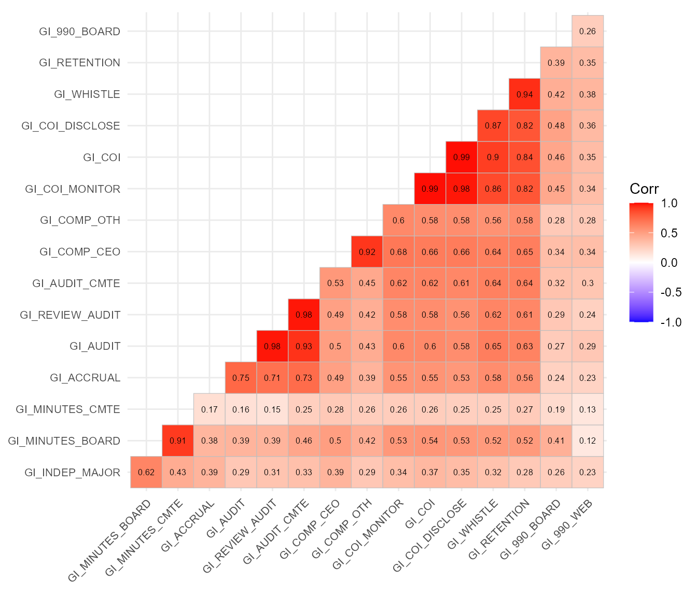

This article documents how the 2023 governance index was built: the population it was fit to, how the items were chosen and coded, how many dimensions the items have, which measurement model was chosen and why, how scores are computed, and how the scores were validated.
The population results come from the fitting script data-raw/fit-model-2023.R
and the analysis behind the accompanying paper. The code chunks
reproduce the key steps on the bundled dat_example (5,000
organizations, tax year 2022), so the article builds offline. Results on
the sample are close to, but not the same as, the population results
quoted in the text.
The index replaces a six-factor model fit to 2018 data in earlier
versions of the package. That model, and the problems that led to the
refit, are documented in vignette("legacy-2018-model").
1. Population and data preparation
Population. Every 501(c)(3) organization that e-filed a full Form 990 for tax year 2023:
- full Form 990 returns only (
RETURN_TYPE == "990"); 990-EZ and 990-N filers do not answer the governance questions; - one filing per organization, using
panel990::panel_deduplicate()to resolve amended and duplicate returns; - 501(c)(3) organizations only (header checkbox
F9_00_EXEMPT_STAT_501C3_X); - total expenses (Part I line 18) present and non-negative.
That leaves 271,116 organizations. The same rules
give 251,937 organizations in 2021, 262,487 in 2022 and 274,931 in 2024,
which are used for the invariance tests and the over-time comparisons in
vignette("overview").
Fields. The tables are Form 990 Parts IV, VI and XII
(and Schedule M for the legacy model), read raw through panel990.
vignette("download-data") lists every field.
Normalization. Efile fields mix several encodings,
sometimes within one column. get_features() applies two
rules:
| Field type | Coded 1 | Coded 0 | Coded NA
|
|---|---|---|---|
Yes/no questions (e.g. F9_06_POLICY_COI_X) |
"true", "1", "yes",
"X"
|
"false", "0", "no"
|
blank ("" or NA) |
Checkboxes (e.g. F9_06_DISCLOSURE_AVBL_OWN_WEB_X) |
"X" |
blank | never |
A blank yes/no answer is treated as not answered, not as no. The scoring model uses the items an organization did answer, and the standard error grows when items are missing. (The legacy features code blanks as 0.)
2. Choosing the items
Candidate practices. The starting list was the set of practices recommended by widely used practitioner inventories of good nonprofit governance: the IRS’s governance guidance and examiner check sheet, the Panel on the Nonprofit Sector’s report to Congress, BoardSource’s surveys and its Sarbanes-Oxley analysis with Independent Sector, the Stanford survey of nonprofit directors, the McKinsey board self-assessment, and the Urban Institute and Johns Hopkins surveys of governance practice, among others. Each recommended practice was matched to the Form 990 line that records it.
A consensus core (a conflict-of-interest policy with annual disclosure and enforcement, whistleblower and retention policies, an independent audit, board review of the 990 and an independent pay-setting process) is recommended by seven or more inventories, and all of it is on the 990. Several widely recommended practices that the 990 records were missing from the 2018 model, most importantly the audit committee (XII-2c). And the practices that dominate board self-assessment tools, such as strategic planning, board self-evaluation, CEO evaluation and succession planning, have no 990 question at all. The index therefore measures the fiduciary and compliance side of governance, not the whole construct.
Three kinds of 990 items. The 990 lines that can be matched fall into three groups, and only the first belongs in the index.
| Kind | Examples | Decision |
|---|---|---|
| Practices a board adopts | written policies, audits, minutes, pay-setting process | 16 items in the index |
| Risk events an organization discloses | insider transactions (IV-28), loans to insiders (IV-26), family ties (VI-2), management company (VI-3), asset diversion (VI-5) | returned as RISK_* indicators, not scored |
| Conditional practices that apply only in some situations | single audit (XII-3b), chapter policy (VI-10b), joint-venture policy (VI-16b), gift-acceptance policy (Sched. M-31) | left out |
Risk events are left out for three reasons. They record events and exposures, not practices. They are weakly related to one another (tetrachoric correlations of .0 to .37), so they do not form a scale. And they rise with size, so they correlate positively with the practice count (insider transactions .25, management company .22): larger organizations both adopt more practices and have more to disclose. The 2018 model reverse-coded these items as “good practice”, which is one reason its total score moved in the wrong direction (see the legacy article).
Conditional practices apply to fewer than 11% of filers and are nearly universal where they apply (the gift-acceptance policy is the exception). Coding “not applicable” as 1, as the legacy model did, mixes organizations that have no non-cash gifts with organizations that have a policy for them.
Two further items were dropped as uninformative: excess-benefit transactions (0.04% of filers) and asset diversion (0.1%) are too rare to scale, and changes to governing documents (VI-4) or the existence of members (VI-6, VI-7) are neither good nor bad practice.
Board independence. Part VI line 1 gives the number of voting and independent members. A fully independent board falls with size, from 73% of the smallest organizations to 43% of the largest, because large organizations seat their CEO as a voting member. Majority independence (at least half of the voting members independent) is the more common recommendation and is the item used.
3. Coding the 16 items
data( "dat_example", package = "governance" )
features <- get_features( dat_example )
items <- gov_model_2023$itemsMost items are a single yes/no answer. Four rules need explanation.
Audit and review combine Parts IV and XII.
GI_AUDIT is 1 when Part XII line 2b, Part IV line 12a
(separate audit) or line 12b (consolidated audit) is yes.
GI_REVIEW_AUDIT is 1 when the statements were also, or
only, compiled or reviewed (XII-2a).
Follow-up questions are coded 0 when the parent practice is
absent. The 990 asks about an audit committee only of
organizations that had a review or audit, and about annual disclosure
and monitoring only of organizations with a conflict-of-interest policy.
These items are coded 0, not NA, when the parent practice
is absent, so every item is defined for every organization. The cross
tab shows the structure: no organization reports disclosure without a
policy.
| 0 | 1 | |
|---|---|---|
| 0 | 1943 | 0 |
| 1 | 279 | 2771 |
That nesting leaves empty cells in the two-way tables, which matters for the choice of model below.
Accounting method. GI_ACCRUAL is 1 when
the accrual box is checked, 0 when cash or other is checked or an
“other” method is described, and NA when nothing is
reported.
Independence share. GI_INDEP_MAJOR is
NA when the voting-member count is 0 or missing, or when
the independent count exceeds the voting count.
The items differ widely in how common they are. Prevalence in the example sample is close to the 2023 population.
prevalence <- data.frame(
item = items,
example = colMeans( features[ , items ], na.rm = TRUE ),
population = gov_model_2023$item_means
)
knitr::kable( prevalence, digits = 2, row.names = FALSE,
col.names = c("Item", "Example (2022)", "All filers (2023)") )| Item | Example (2022) | All filers (2023) |
|---|---|---|
| GI_REVIEW_AUDIT | 0.48 | 0.49 |
| GI_AUDIT | 0.38 | 0.40 |
| GI_AUDIT_CMTE | 0.38 | 0.39 |
| GI_ACCRUAL | 0.59 | 0.62 |
| GI_INDEP_MAJOR | 0.86 | 0.88 |
| GI_MINUTES_BOARD | 0.94 | 0.93 |
| GI_MINUTES_CMTE | 0.85 | 0.85 |
| GI_990_BOARD | 0.68 | 0.71 |
| GI_COI | 0.61 | 0.66 |
| GI_COI_DISCLOSE | 0.55 | 0.60 |
| GI_COI_MONITOR | 0.52 | 0.57 |
| GI_WHISTLE | 0.43 | 0.47 |
| GI_RETENTION | 0.48 | 0.50 |
| GI_COMP_CEO | 0.39 | 0.42 |
| GI_COMP_OTH | 0.27 | 0.28 |
| GI_990_WEB | 0.07 | 0.09 |
4. Correlation structure
The items are binary, so Pearson correlations understate their association. Tetrachoric correlations estimate the correlation between the continuous propensities that underlie each yes/no answer.
tet <- psych::tetrachoric( features[ , items ] )
ggcorrplot::ggcorrplot( tet$rho, hc.order = TRUE, type = "lower",
lab = TRUE, lab_size = 2.2, tl.cex = 8 )
The correlations are high and almost all positive, and they cluster into blocks: the five written-policy items, the four financial-assurance items, the two minutes items and the two pay-setting items. The matrix is not positive definite. The empty cells created by nesting (no disclosure without a policy; no audit committee without a review or audit) push some correlations to the edge of the admissible range. The same problem appears in earlier work on the 990 governance items, and it rules out a plain factor analysis of the correlation matrix as the final model.
5. How many dimensions?
Three checks were run on half of the 2023 population (131,884 organizations).
- Number of factors. Parallel analysis suggests 6, which is typical over-extraction at this sample size; Velicer’s minimum average partial suggests 3.
- Exploratory factor analysis. A three-factor oblique solution separates written policies (with pay-setting and the 990 items), financial assurance, and board process (minutes and independence). The factors correlate .35 to .67. A fourth factor splits pay-setting from the other policies.
- Bifactor decomposition. An omega analysis finds a strong general factor: omega-hierarchical .81 (the share of score variance due to the general factor), omega-total .97, and an explained common variance of .64 (the general factor’s share of the common variance). By the usual guides (omega-h above .80, ECV above .60) a single total score is defensible.
The three-factor solution replicates on the example sample:
efa <- psych::fa( tet$rho, nfactors = 3, n.obs = nrow(features),
rotate = "oblimin", fm = "minres" )
loadings <- unclass( efa$loadings )
loadings[ abs(loadings) < 0.3 ] <- NA
knitr::kable( loadings, digits = 2 )| MR1 | MR2 | MR3 | |
|---|---|---|---|
| GI_REVIEW_AUDIT | 1.02 | ||
| GI_AUDIT | 0.99 | ||
| GI_AUDIT_CMTE | 0.93 | ||
| GI_ACCRUAL | 0.64 | ||
| GI_INDEP_MAJOR | 0.49 | ||
| GI_MINUTES_BOARD | 0.96 | ||
| GI_MINUTES_CMTE | 0.93 | ||
| GI_990_BOARD | 0.42 | ||
| GI_COI | 1.01 | ||
| GI_COI_DISCLOSE | 1.00 | ||
| GI_COI_MONITOR | 0.98 | ||
| GI_WHISTLE | 0.86 | ||
| GI_RETENTION | 0.80 | ||
| GI_COMP_CEO | 0.67 | ||
| GI_COMP_OTH | 0.62 | ||
| GI_990_WEB | 0.36 |
Two more checks support a single ordered scale. A Mokken scale analysis places all 16 items in one scale (H = .56, a strong scale): practices are adopted in a cumulative order, from minutes and board independence, through written policies and audits, to pay-setting processes and posting the 990 online. A latent class analysis finds two routes to partial adoption, a policy route and a financial-assurance route, which is why the specific-factor scores are reported alongside the general score.
6. Choosing the measurement model
Four ways of combining the items were compared on the 2023 data:
| Model | Pros | Cons |
|---|---|---|
| Count of practices | Transparent | Treats every practice as equally informative; no standard error |
| Factor scores from an EFA | Familiar | Assumes continuous items; the tetrachoric matrix is not positive definite |
| Unidimensional 2PL IRT | Built for binary items; standard errors | Ignores the nesting; conflict-of-interest slopes blow up |
| Bifactor 2PL IRT | General score plus specific factors that absorb the nesting | More complex to estimate |
Fit of the two IRT models (40,000-organization subsample; M2 statistics):
| Model | RMSEA | SRMSR | CFI | BIC |
|---|---|---|---|---|
| Unidimensional 2PL | .149 | .105 | .859 | 530,990 |
| Bifactor 2PL, 4 specific factors | .037 | .036 | .993 | 462,475 |
In the unidimensional model the conflict-of-interest discriminations reach 36, 31 and 11, a sign of local dependence: answering yes to disclosure is nearly determined by answering yes to the policy. The bifactor model gives these nested items a shared specific factor, which absorbs the dependence, and fits far better. It is the model used.
7. The 2023 model
The model is a bifactor two-parameter logistic item response model
(mirt::bfactor()). Every item loads on the general factor.
Thirteen items also load on one of four specific factors; board
independence, the 990 given to the board and the 990 posted online load
on the general factor only.
| Specific factor | Items | Score column |
|---|---|---|
| Financial assurance | review or audit, audit, audit committee, accrual | gov_s_finance |
| Minutes | board minutes, committee minutes | gov_s_minutes |
| Written policies | COI policy, disclosure, monitoring, whistleblower, retention | gov_s_policy |
| Compensation | CEO pay process, other-officer pay process | gov_s_comp |
The specific factors differ in how much they measure on their own. The share of each subscale’s variance that belongs to its specific factor (omega-hierarchical for the subscale) is .46 for financial assurance, .50 for compensation and .76 for minutes, but under .01 for written policies. The policy loadings are small and change sign (about +.23 on the three conflict-of-interest items and -.24 on whistleblower and retention). The written policies are the core of the general factor, so their specific factor is only a contrast within the bundle and should not be used as a subscore. Financial assurance is the most useful subscore (score reliability .57). The other three are less reliable (.29 to .48).
Fit to all 271,116 organizations: M2 RMSEA .038, SRMSR .040, CFI
.992. The standardized loadings are stored in
gov_model_2023:
L <- as.data.frame( gov_model_2023$loadings )
names( L ) <- c( "General", "Finance", "Minutes", "Policy", "Comp" )
L[ L == 0 ] <- NA
knitr::kable( L, digits = 2 )| General | Finance | Minutes | Policy | Comp | |
|---|---|---|---|---|---|
| GI_REVIEW_AUDIT | 0.68 | 0.73 | |||
| GI_AUDIT | 0.70 | 0.71 | |||
| GI_AUDIT_CMTE | 0.70 | 0.69 | |||
| GI_ACCRUAL | 0.63 | 0.46 | |||
| GI_INDEP_MAJOR | 0.47 | ||||
| GI_MINUTES_BOARD | 0.58 | 0.78 | |||
| GI_MINUTES_CMTE | 0.35 | 0.93 | |||
| GI_990_BOARD | 0.50 | ||||
| GI_COI | 0.97 | 0.23 | |||
| GI_COI_DISCLOSE | 0.97 | 0.24 | |||
| GI_COI_MONITOR | 0.96 | 0.24 | |||
| GI_WHISTLE | 0.96 | -0.23 | |||
| GI_RETENTION | 0.93 | -0.25 | |||
| GI_COMP_CEO | 0.73 | 0.62 | |||
| GI_COMP_OTH | 0.63 | 0.76 | |||
| GI_990_WEB | 0.49 |
The written-policy items carry the most information about the general factor (loadings .93 to .97), followed by the pay-setting and financial-assurance items (.63 to .73). Committee minutes, board independence and the two 990 items load .35 to .50; they are common or rare practices that say less about an organization’s overall governance. The policy items have small specific loadings of opposite sign: having the conflict-of-interest items but not the whistleblower and retention policies is a recognizable pattern.
gov_model_2023 also stores the item parameters
(values), the factor assignment (spec), fit
statistics and the date fitted.
8. Scoring
get_scores() rebuilds the model with every parameter
fixed at its 2023 value and computes expected a posteriori (EAP) scores
with mirt::fscores(). Fixed parameters have three
consequences:
- A common scale. The 2023 population has mean 0 and standard deviation 1 on the latent general factor, and a score from 2021 or 2024 is on the same scale. If practices spread, scores rise; the scale does not re-center each year. (The EAP estimates themselves have a standard deviation of about 0.9 in 2023, because each estimate is pulled toward the mean in proportion to its uncertainty.)
- Weighting. Practices that carry more information count for more, so two organizations with the same count can have different scores.
- Standard errors and missing items. Every score has a standard error. Missing items are skipped, which widens the standard error.
The weighting is easy to see with made-up response patterns. Each organization below reports exactly eight practices.
none <- setNames( as.list(rep(0, 16)), items )
# eight practices from the policy and pay-setting items
policies <- replace( none, c("GI_COI", "GI_COI_DISCLOSE", "GI_COI_MONITOR",
"GI_WHISTLE", "GI_RETENTION", "GI_COMP_CEO",
"GI_COMP_OTH", "GI_990_BOARD"), 1 )
# eight practices from the board-process and financial items
process <- replace( none, c("GI_MINUTES_BOARD", "GI_MINUTES_CMTE", "GI_INDEP_MAJOR",
"GI_990_BOARD", "GI_990_WEB", "GI_ACCRUAL",
"GI_REVIEW_AUDIT", "GI_AUDIT"), 1 )
patterns <- rbind( as.data.frame(none), as.data.frame(policies),
as.data.frame(process), as.data.frame(lapply(none, \(x) 1)) )
patterns$pattern <- c( "No practices", "Eight: policies", "Eight: process", "All 16" )
scored <- get_scores( patterns )
vars <- c( "pattern", "gov_count", "gov_score", "gov_score_se",
"gov_s_finance", "gov_s_minutes" )
knitr::kable( scored[ , vars ], digits = 2 )| pattern | gov_count | gov_score | gov_score_se | gov_s_finance | gov_s_minutes |
|---|---|---|---|---|---|
| No practices | 0 | -1.94 | 0.65 | -0.17 | -1.16 |
| Eight: policies | 8 | 0.29 | 0.26 | -1.21 | -2.14 |
| Eight: process | 8 | -0.65 | 0.27 | 1.18 | 0.35 |
| All 16 | 16 | 1.69 | 0.66 | 0.31 | 0.10 |
The organization with the eight written-policy items scores well above the one with eight board-process items, because the policy items are more discriminating. The specific-factor scores show where each pattern departs from what its general score predicts.
Scores are most precise in the middle of the scale. In 2023 the mean standard error is about .20 in the middle deciles and about .6 in the top and bottom deciles, where few items discriminate: almost every organization documents its meetings, and almost none posts its 990 online.
9. Validity
Agreement with simpler scores.
-
gov_scorecorrelates .955 withgov_count(Spearman .959). - It correlates .68 with the legacy
total.score. A quarter of filers sit two or more quintiles apart on the two scores.
Size gradient. Governance practices rise with
organization size. The Spearman correlation with log expenses is .57 for
gov_score, .62 for the count and .41 for the legacy score,
which under-states the gradient because of its negative weights on the
risk items.
Invariance. Before comparing groups, each item was tested for differential item functioning (DIF): whether organizations at the same overall level answer the item differently depending on group membership. The test is logistic regression on the rest score; effect sizes are the change in Nagelkerke R², with .035 as the threshold for moderate DIF.
| Comparison | Result |
|---|---|
| Tax year, 2021–2024 | ΔR² ≤ .001 for every item: fully invariant |
| Size (six expense bands) | Moderate DIF for audit (.067), accrual (.048) and review or audit (.042); others ≤ .028 |
| Subsector | Moderate DIF for the 990 posted online (.038) only |
Year invariance is what justifies fixing the parameters at 2023 values and scoring other years with them. The size DIF is uniform: at the same overall level of governance, larger organizations are more likely to be audited and to use accrual accounting, which fits state audit thresholds and the federal single-audit requirement. Dropping the three flagged items shrinks the gap between the largest and smallest organizations from 1.93 to 1.78 standard deviations and leaves the order of the size bands unchanged. Keep this in mind when comparing organizations of very different size.
Predictive validity. 2023 scores (standardized) were used to predict 2024 outcomes for the same organization, controlling for log expenses, government revenue share, age, subsector and state (253,416 organizations matched in 2024).
| 2024 outcome | Base rate | gov_score |
gov_count |
legacy score |
|---|---|---|---|---|
| No full 990 filed (logit) | 6.5% | −0.27*** | −0.35*** | −0.21*** |
| Contribution growth (log points) | – | +0.018*** | +0.022*** | +0.006*** |
| New insider transaction or loan (logit) | 1.25% | +0.12*** | +0.11*** | +0.19*** |
| New asset diversion (logit) | 0.06% | +0.15 | +0.09 | −0.01 |
Better-governed organizations are much more likely to file a full 990 again and see faster contribution growth; the legacy score is about a third as predictive of contributions. Higher governance scores predict more newly disclosed insider transactions, which fits a disclosure effect: organizations with conflict-of-interest processes find and report these transactions. This is another reason to treat the risk items as disclosures rather than as evidence of poor governance. Asset diversions are too rare to say anything.
10. Limitations
- The 990 sees only some of governance. It records whether policies exist, not whether they are followed, and nothing about board engagement, strategy or evaluation.
- Self-report and symbolic adoption. Organizations may adopt a policy because the 990 asks about it. The index measures reported practice.
- Size. Capacity drives adoption. Compare organizations of similar size, or adjust for size, and note the size DIF in the audit items.
- Ceiling and floor. The items cluster in the middle of the difficulty range, so the index separates well-governed organizations from one another less precisely than it separates them from poorly governed ones.
Reproducing the model
data-raw/fit-model-2023.R downloads the 2023 tables with
panel990, applies the population rules above, builds the items with
get_features() and fits the model. Its log-likelihood
matches the published anchor model (−1,563,799.07), and
get_scores() reproduces the anchor model’s scores to within
1e-14. The script takes about 15 minutes, most of it model fitting.